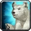
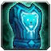

En bref
En plus des avantages par personnage, les points d’héritage s’accumulent sur tout le compte et débloquent des jouets et des objets ornementaux. Quatre récompenses sont annoncées au lancement.[1]
Points clés
- Quatre récompenses au lancement.[1]
- De nouvelles récompenses sont prévues à chaque mise à jour de contenu.[1]
- Icônes du jeu affichées pour les quatre récompenses (fichiers du jeu, client 1.60.1.70862).[2] Données du jeu (client 1.60.1.70862)
- Icônes du jeu affichées pour les quatre récompenses (fichiers du jeu, client 1.60.1.70862).[2] Données du jeu (client 1.60.1.70862)
- Icônes du jeu affichées pour les quatre récompenses (fichiers du jeu, client 1.60.1.70862).[2] Données du jeu (client 1.60.1.70862)
- Icônes du jeu affichées pour les quatre récompenses (fichiers du jeu, client 1.60.1.70862).[2] Données du jeu (client 1.60.1.70862)
- Icônes du jeu affichées pour les quatre récompenses (fichiers du jeu, client 1.60.1.70862).[2] Données du jeu (client 1.60.1.70862)
- Icônes du jeu affichées pour les quatre récompenses (fichiers du jeu, client 1.60.1.70862).[2] Données du jeu (client 1.60.1.70862)
Les quatre récompenses, illustrées
Les quatre récompenses du lancement avec leur icône du jeu et leurs données des fichiers du jeu (client 1.60.1.70862). Chaque récompense a aussi une quête « Legacy Reward » dans les données de quêtes (à confirmer).[1][2][3]

Réplique de carabine à air comprimé de Forgefer dans son étui
Holstered Replica Ironforge Air Rifle
- Obtention
- Récompense d’héritage du lancement (nommée « Réplique de carabine à air comprimé de Forgefer » par Blizzard) : points d’héritage cumulés sur le compte (palier non publié)
Récompense de la quête « Legacy Reward: Replica Ironforge Air Rifle » - Zone
- non indiquée
- PNJ
- non indiqué
- Effet
- Vous dégainez votre réplique de carabine à air comprimé de Forgefer pour une fusillade amicale.
- Référence
- objet n° 276236

Ourson spectral
Spectral Bear Cub
- Obtention
- Récompense d’héritage du lancement : points d’héritage cumulés sur le compte (palier non publié)
Récompense de la quête « Legacy Reward: Spectral Bear Cub » - Zone
- non indiquée
- PNJ
- non indiqué
- Effet
- Clic droit pour invoquer ou renvoyer votre ourson spectral.
- Référence
- objet n° 277714 · espèce n° 5122

Tabard d’ours spectral
Spectral Bear Tabard
- Obtention
- Récompense d’héritage du lancement : points d’héritage cumulés sur le compte (palier non publié)
- Zone
- non indiquée
- PNJ
- non indiqué
- Référence
- objet n° 277717

Rênes d’ours spectral
Reins of the Spectral Bear
- Obtention
- Récompense d’héritage du lancement : points d’héritage cumulés sur le compte (palier non publié)
- Zone
- non indiquée
- PNJ
- non indiqué
- Effet
- Invoque et renvoie un ours spectral.
- Référence
- objet n° 277718
Les récompenses
| Nom (FR) | Nom (EN) | Type et description |
|---|---|---|
| Réplique de carabine à air comprimé de Forgefer | Replica Ironforge Air Rifle | Jouet : batailles factices entre joueurs ; étourdit et compte les points |
| Ourson spectral | Spectral Bear Cub | Mascotte exclusive, inspirée du chasseur nain et de son compagnon de la cinématique |
| Tabard d’ours spectral | Spectral Bear Tabard | Tabard exclusif |
| Rênes d’ours spectral | Reins of the Spectral Bear | Monture spectrale exclusive |
Toutes les collections
Toutes les montures, mascottes et jouets, avec image du jeu et obtention : /fr/objets/collections/ (montures : /fr/objets/montures/, mascottes : /fr/objets/mascottes/, jouets : /fr/objets/jouets/).[2] Données du jeu (client 1.60.1.70862)
Historique des corrections
17 novembre 2026 (v41, publiée avec la v42) : fiches illustrées par les icônes du jeu, regroupées par moyen d’obtention ; noms français officiels et prix repris des fichiers du jeu (client 1.60.1.70862) ; quêtes et PNJ des données de quêtes, à confirmer. Remplace l’ancien tableau.[2] Données du jeu (client 1.60.1.70862)
Ce qui est confirmé / ce qui reste à confirmer
Confirmé par les sources officielles
- Les quatre noms FR/EN et leur type.[1]
Reste à confirmer
- Nombre de points d’héritage nécessaire pour chaque récompense : non publié.
- Quête « Legacy Reward » de chaque récompense : vue dans les données de quêtes, sans PNJ ni lieu ; à confirmer en jeu.
- Quête « Legacy Reward » de chaque récompense : vue dans les données de quêtes, sans PNJ ni lieu ; à confirmer en jeu.
- Quête « Legacy Reward » de chaque récompense : vue dans les données de quêtes, sans PNJ ni lieu ; à confirmer en jeu.
- Quête « Legacy Reward » de chaque récompense : vue dans les données de quêtes, sans PNJ ni lieu ; à confirmer en jeu.
- Quête « Legacy Reward » de chaque récompense : vue dans les données de quêtes, sans PNJ ni lieu ; à confirmer en jeu.
- Quête « Legacy Reward » de chaque récompense : vue dans les données de quêtes, sans PNJ ni lieu ; à confirmer en jeu.
Sources
- [1] Découvrez le système d’héritage de World of Warcraft: Forever (FR) · publié le · consulté le
Get to Know the World of Warcraft: Forever Legacy System (EN) · publié le · consulté le - [2] WoW Forever client files, build 1.60.1.70862 — data tables and icons read from Blizzard’s official CDN (EN) · date de publication non indiquée · consulté le Données du jeu — client 1.60.1.70862
- [3] Quest data JSON (Forever game data 1.60.1, partly completed by player-addon contributions; 64 files consulted) (EN) · date de publication non indiquée · consulté le Source non officielle — à confirmer
Sources officielles Blizzard Entertainment (droits réservés). Ce wiki en propose une synthèse originale ; seules de courtes citations sont reproduites. Les informations annoncées peuvent évoluer avant ou après le lancement. Les sources marquées « données du jeu » viennent des fichiers du client WoW Forever (build 1.60.1.70862). Ce n’est pas une confirmation officielle de Blizzard. Les sources marquées « à confirmer » ne sont pas des sources officielles Blizzard (base de fans ou extrait sans tampon de build) : les informations qui ne reposent que sur elles restent à confirmer.
Version documentaire : World of Warcraft: Forever — annonces officielles et fichiers du jeu (client 1.60.1.70862), état documentaire 2026-11-17 · révision 20